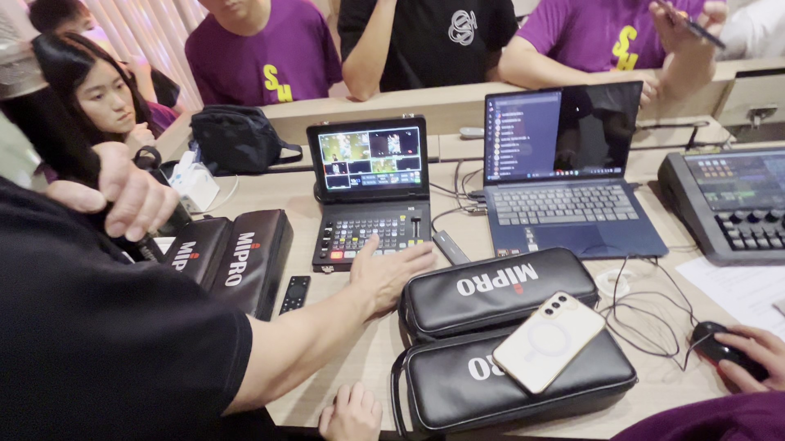
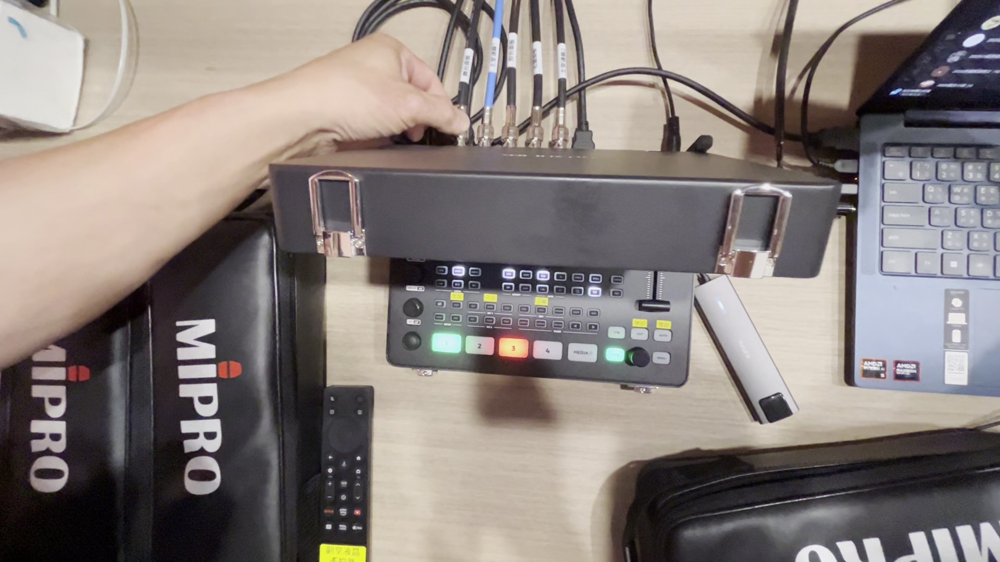
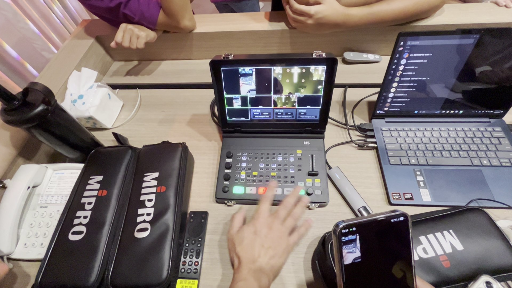
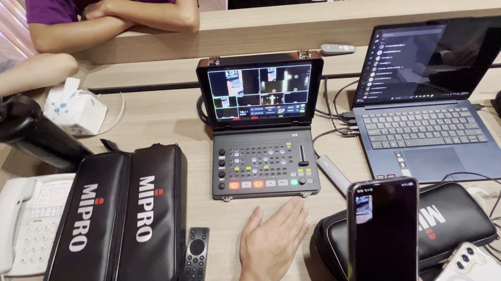
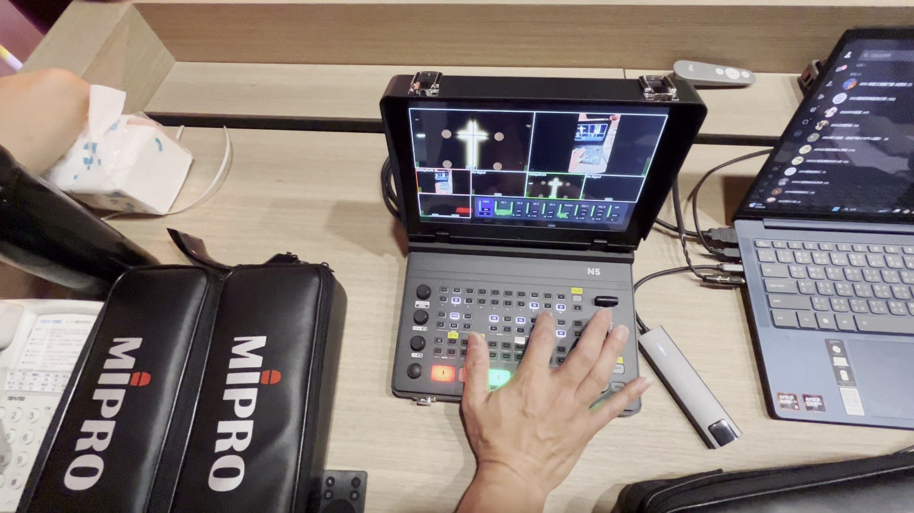
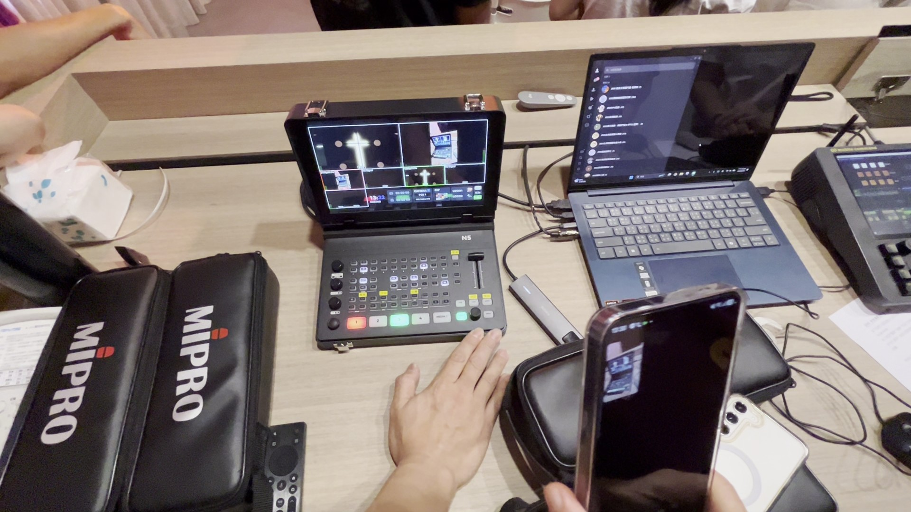
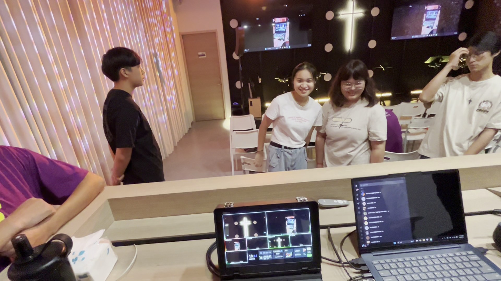

教育訓練手冊、主日崇拜標準作業程序 (SOP) 與服事檢核清單
Sprolink NeoLIVE N5 採用便攜式手提箱一體成型設計，內建 10.1 吋高解析 TFT 液晶螢幕，將導播台、多畫面監看器、混音器與 PTZ 攝影機控制器高度整合。



顯示即將切入的待命畫面。導播必須在此視窗確認構圖與對焦無誤後方可切換。
顯示目前正在正式直播與大堂投影的畫面，代表現場播出狀態。

CUT 瞬間切換。AUTO 依設定之 0.5s~1.0s 自動平滑淡入。FTB 淡入純黑；若畫面全黑請再按一次恢復。
講道時段建議使用 PIP 模式：按下 PIP 1 ➡️ PVW 預覽 ➡️ SET 調節尺寸位置 ➡️ PGM 同步上屏。

MIC 1 必須設為 ON (常開)，切勿設為 AFV，以防止切換機位時講員聲音中斷！
若發現聲音與講員嘴型不同步，旋轉 DELAY 旋鈕微調延遲毫秒 (ms) 直到對齊。

| 預置位 | 鏡頭角度 | 說明 |
|---|---|---|
| 1 | 講台特寫 (Pulpit Close-up) | 牧師講道、主席宣召半身景 |
| 2 | 講台全景 (Pulpit Wide) | 十字架背景與講台全景 |
| 3 | 敬拜主領 / 司琴 | 主領特寫或司琴手部鏡頭 |
| 4 | 敬拜團全景 | 樂團全體畫面 |
| 5 | 會眾席全景 | 大堂會眾起立敬拜視野 |
操作技巧：在 PTZ 模式下，長按數字鍵儲存，短按數字鍵立即叫用。
| 現象 | 原因 | 排除 SOP |
|---|---|---|
| 按鍵按了沒反應 | 按鍵被鎖定 | 短按一下 LOCK 鍵 即可解鎖。 |
| 主畫面突然全黑 | 誤觸 FTB 淡黑 | 再按一下 FTB 鍵 即可恢復畫面！ |
| 換畫面講員聲音不見 | 誤設為 AFV | 按 AUDIO 將 MIC 1 改為 ON (常開)。 |
| 嘴型與聲音不同步 | 視訊處理延遲 | 旋轉 DELAY 旋鈕 微調延遲毫秒數對齊嘴型。 |
CUTAUTOPIP 1 ➡️ PVW ➡️ SET 調整 ➡️ PGM 上屏PTZ ➡️ 短按數字 1~5 立即就位VOLUME 旋鈕